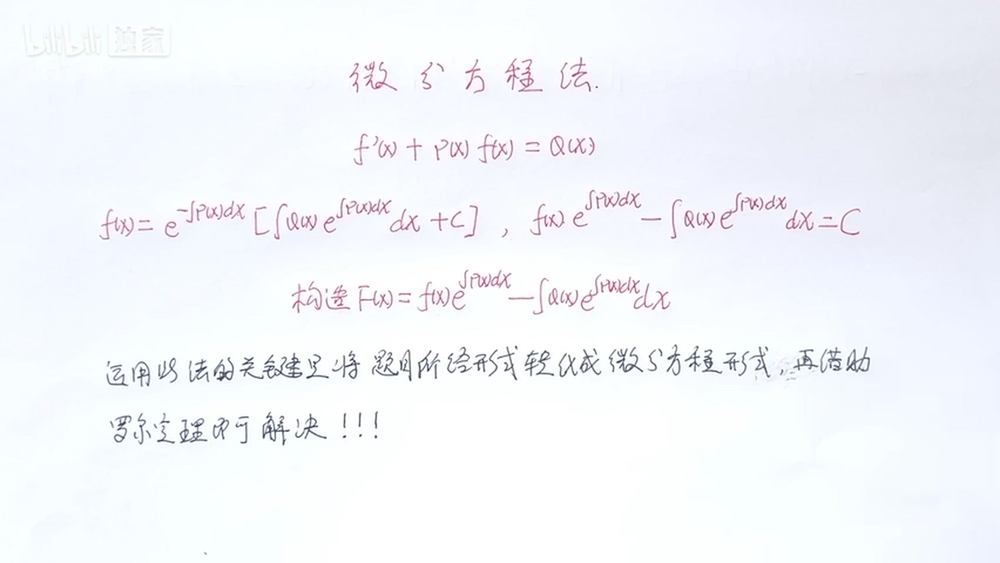
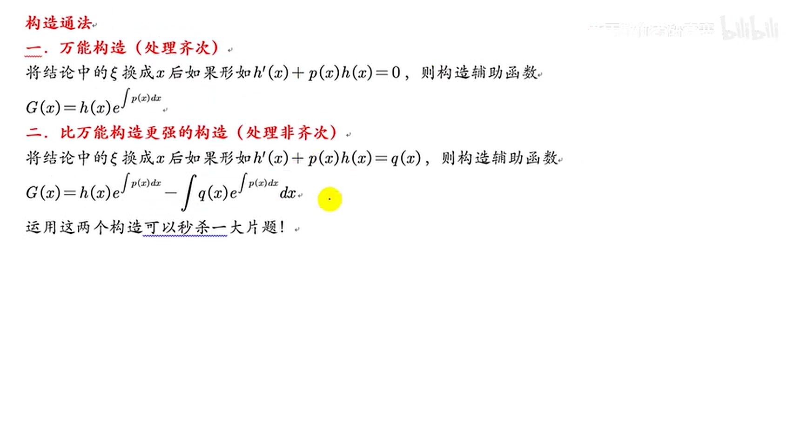
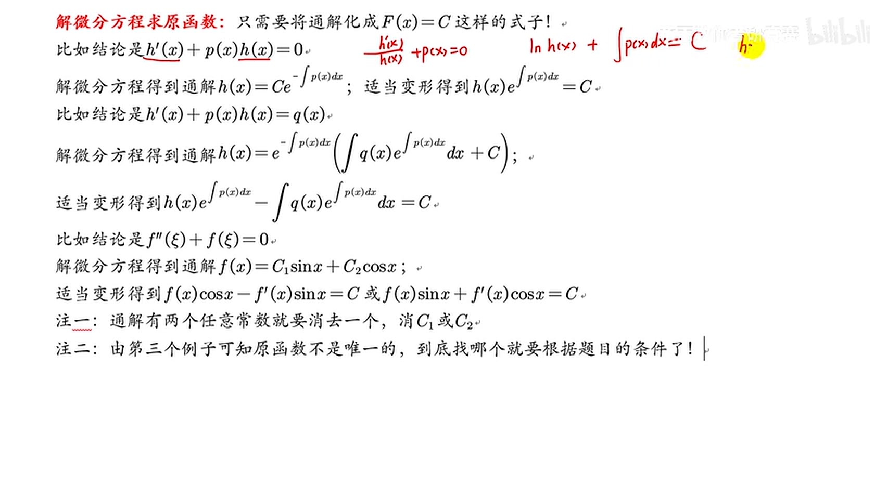
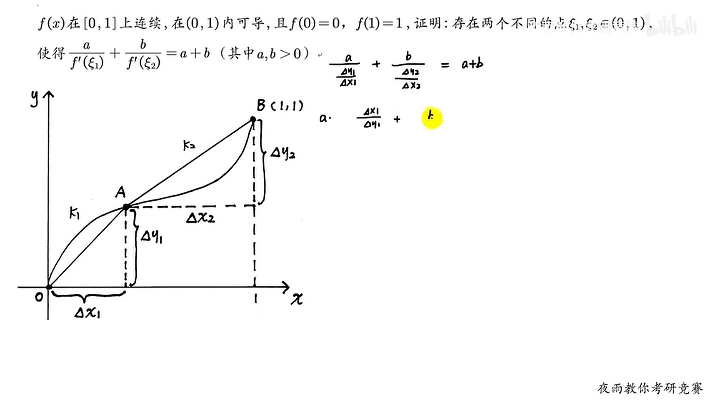
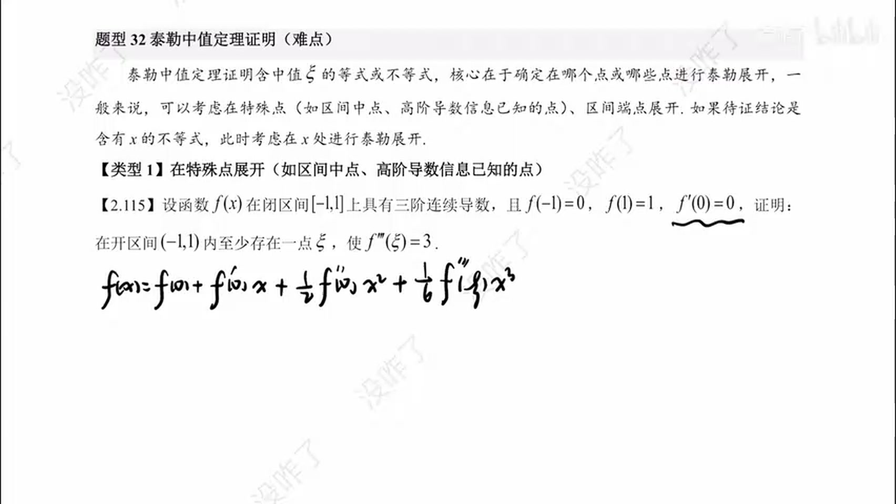
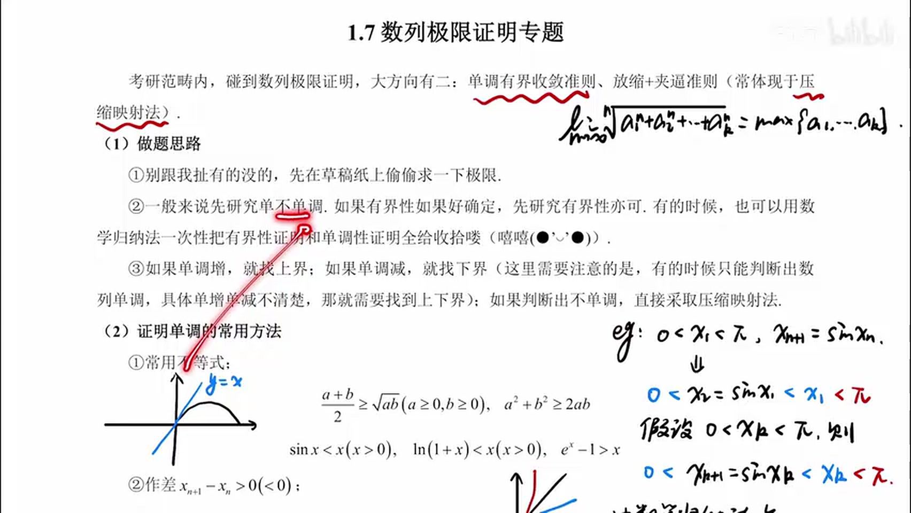

先认清：证明题只有 5 种
考研证明题（通常 10–12 分）翻来覆去就考下面五类。你不需要会“创造”，只需要认出来，然后套对应动作。
| 题面长什么样 | 类型 | 你的第一个动作 | 频率 |
|---|---|---|---|
| 存在 ξ，使 f′(ξ)=… 或 f(ξ)+f′(ξ)=0 | 单中值 | 把结论改成 F′(ξ)=0，构造 F | ★★★★★ |
| 存在两个不同点 ξ、η，使 f′(ξ) 与 f′(η) 满足关系 | 双中值 | 找一个分点，两段分别拉格朗日 | ★★★ |
| 存在 ξ，使 f″(ξ)=… 或含 f‴ | 泰勒中值 | 选展开点，写带余项的泰勒 | ★★★ |
| 数列递推 an+1=f(an)，证收敛/求极限 | 数列极限 | 先猜极限，再证单调有界 | ★★★ |
| 证明某个不等式成立 | 不等式 | 作差 F=左−右，求导看单调 | ★★ |
按你剩下的时间，只做这些
| 时间 | 路线（按顺序） | 目标 |
|---|---|---|
| 40 分钟 | 02 六定理 → 03 构造表 → 09 四句救命话 → 11 一页纸 | 会写步骤，拿 3–4 分 |
| 半天 | 上面全部 → 04 单中值 3 例 → 05 双中值 1 例 → 06 泰勒 1 例 → 07 数列 2 例 | 常见题型能套，拿 5–6 分 |
| 3 天 | 上面全部 → 08 不等式 → 10 里挑 2 个视频补课 → 真题合集挑 6 题 | 冲击 8 分，稳住步骤分 |
顶部的「只剩 40 分钟 / 半天 / 还有 3 天」会把当前不需要看的章节变灰，跟着亮的部分读就行。
12 分是怎么被拆开的
阅卷人实际在找的 5 样东西
- 辅助函数 F(x) 写出来了（约 3 分）
- “连续、可导”条件写全了（约 2 分）
- 端点值 F(a)=F(b) 验证了（约 2 分）
- 定理名字和结论引用对了（约 2 分）
- 最后化简回题目要的形式（约 3 分）
所以，不会做也要写满这 3 句
① 因为 f(x) 在 [a,b] 上连续，在 (a,b) 内可导……
② 令 F(x)=……，则 F(x) 在 [a,b] 上连续，在 (a,b) 内可导；
③ 又 F(a)=F(b)=0，由罗尔定理，存在 ξ∈(a,b)，使 F′(ξ)=0。
这三句本身就是分。空白才是 0 分。
六个定理：只背条件和结论
① 零点定理 证“有根”
条件：f 在 [a,b] 上连续，且 f(a)·f(b) < 0。
结论：存在 ξ∈(a,b)，使 f(ξ)=0。
人话：一头正、一头负，中间一定穿过 0。
② 罗尔定理 最常用
条件：在 [a,b] 连续，在 (a,b) 可导，且 f(a)=f(b)。
结论：存在 ξ∈(a,b)，使 f′(ξ)=0。
人话：两端一样高，中间必有一个“平”的点。
③ 拉格朗日中值定理
条件：在 [a,b] 连续，在 (a,b) 可导。
结论：存在 ξ∈(a,b)，使 f(b)−f(a)=f′(ξ)(b−a)。
人话：平均斜率 = 某一点的瞬时斜率。
④ 柯西中值定理 两个函数
条件：f、g 在 [a,b] 连续，在 (a,b) 可导，且 g′(x)≠0。
结论：存在 ξ∈(a,b)，使
人话：两个函数的“平均斜率之比” = 某点“导数之比”。
⑤ 泰勒公式 二阶就够
条件：f 在含 x0 的区间内有二阶导数。
结论：在 x 与 x0 之间存在 ξ，使
人话：用 x0 的信息去估 x，误差由 f″ 控制。
⑥ 积分中值定理 看到积分
条件：f 在 [a,b] 上连续。
结论：存在 ξ∈[a,b]，使
人话：曲边梯形的面积 = 某个高 × 底。
写条件时的“三件套”
“因为 \(f(x)\) 在 \([a,b]\) 上连续，在 \((a,b)\) 内可导，所以 \(f(x)\) 在 \([a,b]\) 上满足拉格朗日中值定理的条件。”
把这句话背到能默写。所有中值题的第一行都可以先写它。
万能第一步：把结论变成 F′(ξ)=0
题目让你证“存在 ξ 使某个式子成立”。你要做的不是盯着 ξ 发呆，而是把 ξ 换成 x，把式子整理成“某个函数求导等于 0”。那个函数就是 F。
四步机械操作
- 换字母：把结论里的 ξ 全部换成 x，移项，让右边等于 0。
- 凑形式：整理成 \(f'(x)+P(x)f(x)=0\)。P(x) 就是 f(x) 前面那一坨。
- 乘因子：算 \(\mu(x)=e^{\int P(x)\,dx}\)，令 \(F(x)=\mu(x)f(x)\)。
- 用罗尔：验证 F(a)=F(b)，由罗尔得 F′(ξ)=0；约掉 μ(ξ)（永远为正），就是题目要的式子。
为什么乘 \(e^{\int P\,dx}\) 就对了？
因为 \((e^{\int P}f)'=e^{\int P}(f'+Pf)\)。你希望 \(f'+Pf=0\)，那就把整个式子乘一个恒正的因子，让它变成“一个函数的导数 = 0”。
你不需要会解微分方程，只需要会“认出 P、乘上去”。

视频截图00:45背这张表：看到左边，直接写右边
| 题目要你证 | 你就令 F(x)= | 备注 |
|---|---|---|
| f′(ξ)=0 | f(x) | 直接罗尔 |
| f′(ξ)+f(ξ)=0 | exf(x) | P=1 |
| f′(ξ)+λf(ξ)=0 | eλxf(x) | P=λ |
| f′(ξ)+g′(ξ)f(ξ)=0 | eg(x)f(x) | P=g′ |
| ξf′(ξ)+nf(ξ)=0 | xnf(x) | ξ≠0 时 |
| ξf′(ξ)−nf(ξ)=0 | f(x)/xn | ξ≠0 时 |
| ξf′(ξ)+f(ξ)=0 | x f(x) | n=1 的特例 |
| ξf′(ξ)−f(ξ)=0 | f(x)/x | n=1 的特例 |
| f′(ξ)=k（常数） | f(x)−kx | 罗尔 |
| f′(ξ)=[f(b)−f(a)]/(b−a) | f(x)−f(a)−k(x−a) | k 为那个斜率 |

视频截图41:40最标准的罗尔 + 构造（12 分题的样子）
设 f(x) 在 [0,1] 上连续，在 (0,1) 内可导，且 f(0)=f(1)=0。证明：存在 ξ∈(0,1)，使 \(f'(\xi)+f(\xi)=0\)。
令 \(F(x)=e^{x}f(x)\)。
因为 \(e^x\) 与 \(f(x)\) 在 \([0,1]\) 上连续、在 \((0,1)\) 内可导，所以 \(F(x)\) 在 \([0,1]\) 上连续，在 \((0,1)\) 内可导。
又 \(F(0)=e^0f(0)=0\)，\(F(1)=e^1f(1)=0\)，故 \(F(0)=F(1)\)。
由罗尔定理，存在 \(\xi\in(0,1)\)，使 \(F'(\xi)=0\)，即
\(e^{\xi}\bigl[f'(\xi)+f(\xi)\bigr]=0\)。
因为 \(e^{\xi}\gt 0\)，所以 \(f'(\xi)+f(\xi)=0\)。证毕。
换成 x²f(x)，同一套动作
设 f(x) 在 [0,1] 上连续，在 (0,1) 内可导，f(0)=f(1)=0。证明：存在 ξ∈(0,1)，使 \(\xi f'(\xi)+2f(\xi)=0\)。
令 \(F(x)=x^2f(x)\)。则 F 在 [0,1] 连续、在 (0,1) 可导，且 \(F(0)=F(1)=0\)。
由罗尔定理，存在 \(\xi\in(0,1)\)，使 \(F'(\xi)=0\)。而
\(F'(x)=2xf(x)+x^2f'(x)=x\bigl[2f(x)+xf'(x)\bigr]\)。
因为 \(\xi\gt 0\)，约去 ξ，得 \(\xi f'(\xi)+2f(\xi)=0\)。证毕。
单中值：先认 3 个信号
40 分钟模式可跳过；先把 02、03 的构造表背熟，再回来做这节。
信号 A
结论只有 \(f'(\xi)\) 和一个数，没有 f(ξ)。
动作：直接罗尔（端点相等）或拉格朗日（出现差商）。
信号 B
结论里 \(f(\xi)\) 和 \(f'(\xi)\) 同时出现。
动作：查 03 的表，乘积分因子构造 F。
信号 C
结论是 \(f(\xi)=\xi\)、\(f(\xi)=1-\xi\) 这类“具体值”。
动作：移项令 F=f(x)−(那个式子)，用零点定理。

视频截图39:40看到“具体值”就移项：零点定理
设 f(x) 在 [0,1] 上连续，f(0)=0，f(1)=1。证明：存在 ξ∈(0,1)，使 \(f(\xi)=1-\xi\)。
令 \(F(x)=f(x)+x-1\)。则 F 在 [0,1] 上连续。
\(F(0)=f(0)+0-1=-1\lt 0\)，\(F(1)=f(1)+1-1=1\gt 0\)。
由零点定理，存在 \(\xi\in(0,1)\)，使 \(F(\xi)=0\)，即 \(f(\xi)=1-\xi\)。证毕。
看到“差商”就用拉格朗日
设 f(x) 在 [0,1] 上连续，在 (0,1) 内可导，f(0)=0，f(1)=1。证明：存在 ξ∈(0,1)，使 \(f'(\xi)=1\)。
因为 f 在 [0,1] 上连续、在 (0,1) 内可导，由拉格朗日中值定理，存在 \(\xi\in(0,1)\)，使
\(f(1)-f(0)=f'(\xi)(1-0)\)。
代入 \(f(0)=0,\ f(1)=1\)，得 \(f'(\xi)=1\)。证毕。
负号陷阱：\(f'(\xi)=f(\xi)\)
设 f(x) 在 [0,1] 上连续，在 (0,1) 内可导，f(0)=f(1)=0。证明：存在 ξ∈(0,1)，使 \(f'(\xi)=f(\xi)\)。
令 \(F(x)=e^{-x}f(x)\)。则 F 在 [0,1] 连续、在 (0,1) 可导，且 \(F(0)=F(1)=0\)。
由罗尔定理，存在 \(\xi\in(0,1)\)，使 \(F'(\xi)=0\)。而
\(F'(x)=e^{-x}\bigl[f'(x)-f(x)\bigr]\)，
故 \(f'(\xi)-f(\xi)=0\)，即 \(f'(\xi)=f(\xi)\)。证毕。
双中值：找一个分点，切两段
40 分钟模式可跳过；这一型性价比高，但需要先会单中值。
双中值题的套路非常固定：把区间切成两段，在两段上各用一次拉格朗日，让两个导数分别等于两段弦的斜率，再按题目要求相加、相乘或相除。
三步操作
- 看结论怎么组合：是 \(f'(\xi)+f'(\eta)\)、\(f'(\xi)f'(\eta)\)，还是 \(\frac{a}{f'(\xi)}+\frac{b}{f'(\eta)}\)。这决定你后面是加、乘还是除。
- 定分点 c：优先取中点；如果第一问已经给了一个点（比如 \(f(\xi)=1-\xi\)），就用那个点当分点；如果题目给了 \(f(c)\) 的值，直接用。
- 两段分别拉格朗日：在 \([a,c]\) 得 \(f'(\eta)=\frac{f(c)-f(a)}{c-a}\)，在 \([c,b]\) 得 \(f'(\zeta)=\frac{f(b)-f(c)}{b-c}\)，再组合。

视频截图14:302013 数一：第一问的点，就是第二问的分点
设 f(x) 在 [0,1] 上连续，在 (0,1) 内可导，f(0)=0，f(1)=1。
（Ⅰ）证明：存在 ξ∈(0,1)，使 \(f(\xi)=1-\xi\)；
（Ⅱ）证明：存在两个不同的点 η、ζ∈(0,1)，使 \(f'(\eta)f'(\zeta)=1\)。
（Ⅰ）令 \(F(x)=f(x)+x-1\)。F 在 [0,1] 连续，且 \(F(0)=-1\lt 0,\ F(1)=1\gt 0\)。由零点定理，存在 \(\xi\in(0,1)\)，使 \(F(\xi)=0\)，即 \(f(\xi)=1-\xi\)。
（Ⅱ）由（Ⅰ）知 \(f(\xi)=1-\xi\)，且 \(0\lt \xi\lt 1\)。在 \([0,\xi]\) 上用拉格朗日：存在 \(\eta\in(0,\xi)\)，使
\(f'(\eta)=\frac{f(\xi)-f(0)}{\xi-0}=\frac{1-\xi}{\xi}\)。
在 \([\xi,1]\) 上用拉格朗日：存在 \(\zeta\in(\xi,1)\)，使
\(f'(\zeta)=\frac{f(1)-f(\xi)}{1-\xi}=\frac{1-(1-\xi)}{1-\xi}=\frac{\xi}{1-\xi}\)。
两式相乘：\(f'(\eta)f'(\zeta)=\frac{1-\xi}{\xi}\cdot\frac{\xi}{1-\xi}=1\)。
又 \(\eta\in(0,\xi)\)，\(\zeta\in(\xi,1)\)，所以 \(\eta\ne\zeta\)。证毕。
另一种常见组合：\(f'(\xi)+f'(\eta)=\) 常数
同样切两段，但这次把两个拉格朗日式子相加。若两段长度相等（取中点），分母相同，直接合并分子 \(f(b)-f(a)\)。
口诀：相乘找乘积，相加找中点和。
泰勒：看到 f″(ξ) 就展开
40 分钟模式可跳过；如果目标只是 4 分，这一节可以最后看。
题面里只要出现 \(f''(\xi)\)、\(f'''(\xi)\)，或者“二阶可导 + 证明存在某点使 …”，第一反应就是泰勒。别去凑罗尔，凑不出来。
你只需要背这两个式子
二阶（最常用）：在 \(x_0\) 处展开，余项里是 \(f''(\xi)\)：
三阶（看到 \(f'''\) 才用）：
ξ 在 x 与 \(x_0\) 之间。写的时候加一句“其中 ξ 介于 x 与 \(x_0\) 之间”，这是条件分。
展开点怎么选：三句话
| 题面特征 | 在哪展开 | 为什么 |
|---|---|---|
| 给了 \(f(0)\)、\(f(1)\)、\(f'(0)\) 等具体值 | 就在这些点展开 | 把这些值代进去，能消掉一大片 |
| 给了最大值、最小值、极值 | 在极值点 \(x_0\) 展开 | 极值点 \(f'(x_0)=0\)，一次项自动消失 |
| 要证 \(f''(\xi)\) 与区间长度有关 | 在两个端点各展开一次，再相减 | 把 \(f(x_0)\)、\(f'(x_0)\) 消掉，只剩 \(f''\) |

视频截图06:40在最小值点展开：一次项自动消失
设 f(x) 在 [0,1] 上二阶可导，f(0)=f(1)=0，且 f 在 [0,1] 上的最小值为 −1。证明：存在 ξ∈(0,1)，使 \(f''(\xi)\ge 8\)。
设 f 在 \(x_0\in(0,1)\) 处取最小值 −1。由费马定理，\(f'(x_0)=0\)。
在 \(x_0\) 处分别对 \(x=0\) 和 \(x=1\) 写二阶泰勒：存在 \(\xi_1\in(0,x_0)\)、\(\xi_2\in(x_0,1)\)，使
\(0=f(0)=-1+\frac{f''(\xi_1)}{2}x_0^2\)，
\(0=f(1)=-1+\frac{f''(\xi_2)}{2}(1-x_0)^2\)。
于是 \(f''(\xi_1)=\frac{2}{x_0^2}\)，\(f''(\xi_2)=\frac{2}{(1-x_0)^2}\)。
若 \(x_0\le\frac12\)，则 \(f''(\xi_1)\ge 8\)；若 \(x_0\gt\frac12\)，则 \(f''(\xi_2)\ge 8\)。取对应的 ξ 即可。证毕。
“因为 \(f(x)\) 在区间上二阶可导，所以对任意 x，存在 ξ 介于 x 与 \(x_0\) 之间，使
\(f(x)=f(x_0)+f'(x_0)(x-x_0)+\frac{f''(\xi)}{2}(x-x_0)^2\)。”
把这句当模板，先写出来，再代入具体点。即使后面算错，这句本身也有分。
数列极限：只会三招就够
40 分钟模式可跳过；数列题步骤固定，是性价比很高的一类。
① 单调有界
看到：\(a_{n+1}=f(a_n)\) 递推。
三步：猜极限 A → 归纳证有界 → 证单调 → 令 n→∞ 解 A=f(A)。
② 夹逼
看到：n 项和、根号、分母里有 n。
三步：找最大项和最小项 → 放成两个可求的数列 → 两边极限相同。
③ 压缩（比值）
看到：题目直接给 \(|a_{n+1}-A|\le k|a_n-A|\)。
三步：反复代入 → 得 \(|a_n-A|\le k^n|a_1-A|\) → \(k\lt1\) 时趋于 0。
递推数列：先猜 2，再证有界、单调
设 \(a_1=1\)，\(a_{n+1}=\sqrt{2+a_n}\)。证明 \(\{a_n\}\) 收敛，并求极限。
先猜：若极限为 A，则 \(A=\sqrt{2+A}\)，解得 \(A=2\)（\(A=-1\) 舍）。
证有界：归纳证明 \(0\lt a_n\lt 2\)。\(a_1=1\in(0,2)\)；若 \(0\lt a_n\lt 2\)，则 \(a_{n+1}=\sqrt{2+a_n}\lt\sqrt{4}=2\)，且显然 \(a_{n+1}\gt0\)。
证单调：\(a_{n+1}^2-a_n^2=2+a_n-a_n^2=(2-a_n)(1+a_n)\gt0\)，故 \(a_{n+1}\gt a_n\)，数列单调递增。
下结论：由单调有界准则，\(\{a_n\}\) 收敛。设极限为 A，由递推式两边取极限得 \(A=\sqrt{2+A}\)，所以 A=2。
n 项和：夹逼，找最大项和最小项
求 \(\displaystyle\lim_{n\to\infty}\left(\frac{1}{\sqrt{n^2+1}}+\frac{1}{\sqrt{n^2+2}}+\cdots+\frac{1}{\sqrt{n^2+n}}\right)\)。
记 \(a_n=\sum_{k=1}^{n}\frac{1}{\sqrt{n^2+k}}\)。对每个 k，有
\(\frac{1}{\sqrt{n^2+n}}\le\frac{1}{\sqrt{n^2+k}}\le\frac{1}{\sqrt{n^2+1}}\)。
共 n 项，相加得
\(\frac{n}{\sqrt{n^2+n}}\le a_n\le\frac{n}{\sqrt{n^2+1}}\)。
两端极限都为 1（分子分母同除以 n），由夹逼准则，\(\lim a_n=1\)。

视频截图02:00不等式：作差、求导、看端点
40 分钟 / 半天模式可跳过；目标 6 分以上再看。
要证 \(A(x)\ge B(x)\)，最稳的动作只有一个：令 \(F(x)=A(x)-B(x)\)，证明 \(F(x)\ge 0\)。怎么证？求导看单调，再用端点值。
三种常见收尾
① 单调性
\(F(a)=0\)，且 \(F'(x)\ge0\)，则 \(x\ge a\) 时 \(F(x)\ge0\)。
② 最值
求出 \(F\) 的最小值，证明最小值 ≥ 0。
③ 中值定理
把 \(F(b)-F(a)\) 写成 \(F'(\xi)(b-a)\)，再估 \(F'(\xi)\) 的符号。
背四个“送分不等式”
这四个的证明都是“移项 + 求导 + 端点值为 0”，考试可以直接引用，但最好会证。
作差 + 求导，三行结束
证明：当 \(x\gt0\) 时，\(\ln(1+x)\lt x\)。
令 \(F(x)=x-\ln(1+x)\)，定义域 \(x\gt -1\)。则 \(F(0)=0\)，且
\(F'(x)=1-\frac{1}{1+x}=\frac{x}{1+x}\)。
当 \(x\gt0\) 时，\(F'(x)\gt0\)，所以 \(F(x)\) 在 \([0,+\infty)\) 上单调递增。
于是 \(x\gt0\) 时，\(F(x)\gt F(0)=0\)，即 \(\ln(1+x)\lt x\)。证毕。
考场 12 分钟：怎么写满
| 时间 | 动作 | 写下来的东西 |
|---|---|---|
| 0–1 min | 圈关键词 | “存在”“ξ”“η”“f″”“两个不同点” |
| 1–3 min | 判断类型，写 F | \(F(x)=\cdots\)（即使不确定，也先写一个） |
| 3–6 min | 写条件、验端点 | “在 [a,b] 连续，在 (a,b) 可导；F(a)=F(b)=…” |
| 6–8 min | 引用定理、求导 | “由罗尔定理，存在 ξ∈(a,b)，使 F′(ξ)=0” |
| 8–11 min | 化到题目形式 | “即 …”，把要证的式子抄一遍 |
| 11–12 min | 检查 | 区间开闭、ξ 范围、结论有没有抄反 |
四句“救命话”，不会做也先写
① “由闭区间上连续函数的最值定理，\(f(x)\) 在 \([a,b]\) 上取得最大值 M 和最小值 m。”
② “由零点定理，存在 \(\xi\in(a,b)\)，使 \(f(\xi)=0\)。”
③ “由罗尔定理，存在 \(\xi\in(a,b)\)，使 \(f'(\xi)=0\)。”
④ “由单调有界准则，数列 \(\{a_n\}\) 收敛。”
写不出来时，按这个顺序硬写
- 抄题目条件：连续、可导、端点值
- 写一个 F(x)（从 03 的表里挑最像的）
- 写 F(a)、F(b) 的值
- 写“由罗尔定理”
- 写“即 …”（把结论抄一遍）
千万别犯的 4 个错
- 空着不写（0 分）
- 只写“由定理”不写条件
- 闭区间、开区间写反
- 把 ξ 又写回 x，结论不成立
11 个视频怎么用（别从头刷）
40 分钟 / 半天模式可跳过；需要补课时再按卡片点进去。
V01 原话整理：哪些定理要会证
武忠祥这 2.5 分钟信息量最大，直接把“定理证明”的范围点了一遍。下面按录音整理（ASR 个别词可能有误，以大纲为准）：
要会证
- 一元函数：连续、可导、可微之间的关系
- 罗尔定理
- 拉格朗日中值定理
- 变上限积分求导（微积分第一基本定理）
- 一元约 7 个证明，视频里逐一点了
- 多元微分：偏导数连续 ⇒ 可微
- 数一：格林公式（三大公式里最难）、高斯公式、斯托克斯公式
- 数一 / 数三：正项级数判别法（比值判别法等）
不会专门考
- 柯西中值定理：不会专门考
- 数二 / 数三：二重积分的定理证明（教材里没证）
- 数二：级数整章不要求
- 数二 / 数三：多元积分定理证明不是重点
复习顺序建议：先罗尔、拉格朗日、变上限求导；数一再加格林；数二/数三把二重积分证明直接划掉。
27 考研数学武忠祥定理证明题划重点
2.5 分钟把“哪些定理要会证、哪些不会考”点了一遍，信息密度最高。
只看：全片。把老师标成“了解 / 不要求”的点记下来，贴到书桌前。
教你一招解决 95% 以上的微分中值定理题目
把“构造辅助函数”讲成了一套机械流程，和本课件第 03 节完全对应。
只看：00:45 微分方程法总口诀 → 15:45 例 4；中间原理段可 1.5 倍速。其余例题可跳。
中值问题所有题型和方法都在这里（14P）
目前最全的中值题型字典。不要通看，按题型查。
按需查：P1 原函数法（39:40 有通解构造）· P2 万能构造 · P9 双中值 · P10 泰勒 · P11 中值极限。
一小时一网打尽泰勒中值证明
把泰勒题按“展开点”分成三类，条理最清楚。
只看：00:00–05:03 原理 · 05:03 例 1 · 56:27 区间端点展开。后面例题挑 2 道。
两小时一网打尽数列极限证明
数列证明的完整框架：单调有界、夹逼、压缩映射。
只看：00:00–16:51 理论基础 · 16:51 类型一例 1 · 01:14:13 类型二。后面按类型补。
24 考研数学证明题救命系列（5P）
罗尔定理“找原函数”讲得最直白，适合基础差的人。
只看：P2 套路复盘（17 min）· P3 罗尔找 10 个原函数（40 min）· P4 泰勒（15 min）。P5 拉格朗日选看。
【考研数学冲刺】证明题怎么学？看这个，不烧心
讲“证明题该怎么想”的框架，适合看完 V02 后建立整体感。
只看：前 20 分钟。后面的具体题可跳。
2000–2024 考研数学证明题大合集（46P）
真题题库，每段 1–5 分钟。适合最后阶段“看题 → 暂停 → 自己写 → 对照”。
只看：挑 6 题：中值 2、数列 2、零点 1、不等式 1。不要按 P1–P46 顺序刷。
【数一147】中值定理证明技术大公开（2P）
和 V03 有重叠，讲得更细。时间不够时优先 V03。
选看：P1 中值定理（58 min）里挑“构造”部分；P2 泰勒可跳。
全网最强：中值定理证明题，5 小时，彻底拿下（4P）
最全但也最长。不要从头看，会挤掉其他科目。
当字典：P2 上（157 min）查单中值/双中值 · P3 下（191 min）查泰勒/中值极限。只看你要的那一型。
全网最牛的泰勒公式证明
讲泰勒公式“怎么来的”，偏原理。应试优先级最低。
可跳：时间紧直接跳过；想理解公式来源时看前 20 分钟。
注：时间戳按视频页面标注，实际播放可能有一两秒偏差；点链接会直接跳到对应位置。
考前 10 分钟：一页纸
六个定理
- 零点：连续 + 两端异号 → 有根
- 罗尔：连续 + 可导 + 两端相等 → f′(ξ)=0
- 拉格朗日：连续 + 可导 → f(b)−f(a)=f′(ξ)(b−a)
- 柯西：两函数连续可导 + g′≠0 → 斜率之比
- 泰勒：二阶可导 → f(x)=f(x₀)+f′(x₀)(x−x₀)+f″(ξ)/2·(x−x₀)²
- 积分中值：连续 → ∫=f(ξ)(b−a)
数列三招
- 递推 → 单调有界：猜 A → 证有界 → 证单调 → A=f(A)
- n 项和/根式 → 夹逼：最大项 ≤ 和 ≤ 最小项×n
- 给 |an+1−A|≤k|an−A| → 压缩到 0
构造表（背左边→写右边）
- f′+f=0 → exf
- f′+λf=0 → eλxf
- f′+g′f=0 → egf
- ξf′+nf=0 → xnf
- ξf′−nf=0 → f/xn
- ξf′+f=0 → xf
- ξf′−f=0 → f/x
- f′=k → f−kx
- f′=差商 → f−f(a)−k(x−a)
四句救命话
- “在 [a,b] 连续，在 (a,b) 可导”
- “令 F(x)=…，则 F 连续可导”
- “由罗尔定理，存在 ξ，使 F′(ξ)=0”
- “即 …（抄结论）。”
进考场前的 5 个检查
- ξ 的范围是开区间还是闭区间？
- F(a)=F(b) 真的相等吗？
- 定理名字写对了吗？（罗尔 / 拉格朗日 / 柯西 / 零点）
- 最后有没有“即 …”，把结论抄回题目形式？
- 有没有把 ξ 又写回 x？